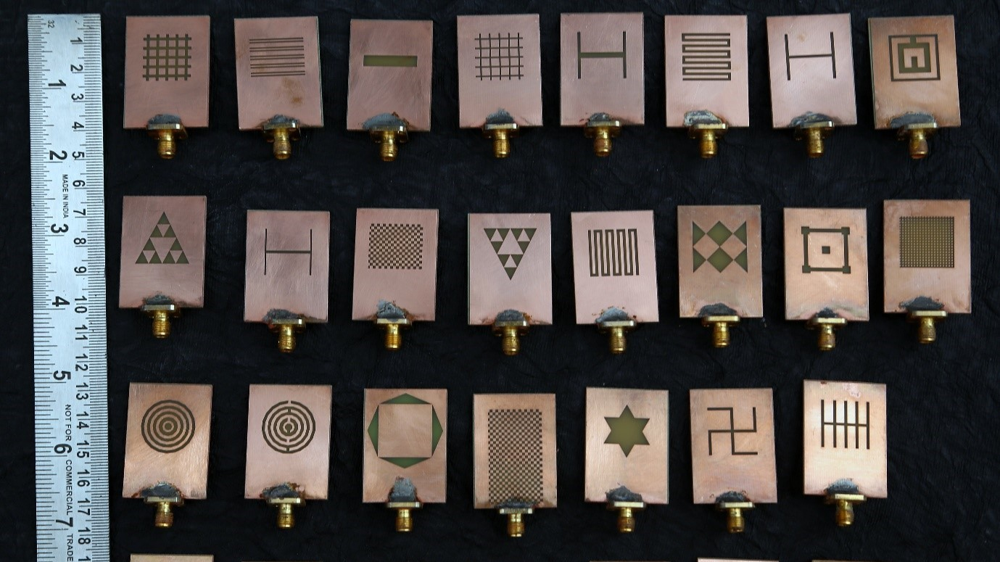
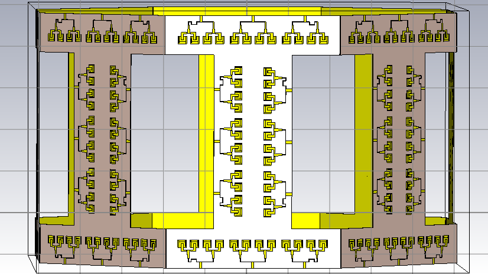
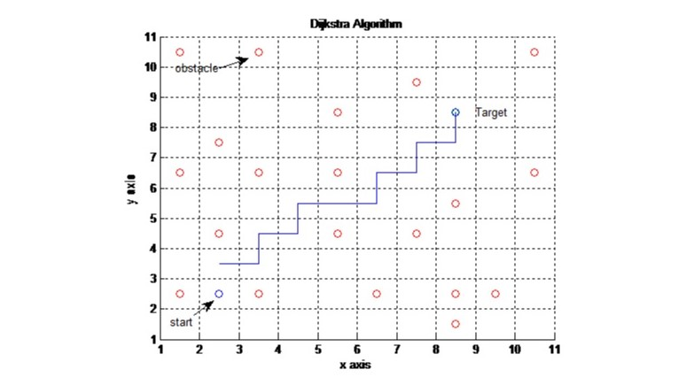

DGS antennas
The design then enhancement of miniaturized patch antennas using Defected Ground Structures (DGS) for wireless application. So, a brief information of the design methodologies of various patch antennas is described, shows communication frequencies which are commonly used by the Federal Communication Commission (FCC) and the International Telecommunication Union (ITU) regulation. The antenna proposed in the thesis are designed mainly concentrating on ISM/ WiMAX/ WLAN bands. The succeeding section describes various patch antennas with state of art technology.
READ MORE

5G Array Antenna and MIMO
In the world of mobile communication technology, 4G has been a huge successful and trend in mobile communication. But still there is a need for faster way of communication for large amount of data transfer. It can also be used for speed of communication in nearby distance like within the campus, industries or Organisation etc. The frequency range of 5G communication is 24GHz to 86GHz and sub-5G spectrum of LTE frequency range is up to 6GHz. The wavelength of 5G ranges from 1-10mm, hence it is also called as millimeter wave frequency. 5G antenna can be used where there is a need of faster speed, not so far distance and large amount of data like Industrial IOT. Where data large amount of raw data is transferred within the industry. We can also use in smartwatches, drones, smartphones etc.
READ MORE

Robotics
Robotic interventions are being introduced and well-accepted as a smarter tool in healthcare. The advantage of robotic precision and fatigueless performance has been widely utilized in various medical procedures not only increasing accuracy but also reducing time and error. Master-slave systems continue benefit the advantages of physical separation with enhanced task delivery using well-designed user interfaces. With advancements in medical imaging, image guided robotic interventions have been urged in diagnosis and focal therapy of many diseases. The ability to interactively adjust manipulation of robotic interventions has been an important consideration for patient safety. Various highly articulated robotic manipulators have been challenging hard-to-reach areas of human body. Soft robotic technologies can be particularly beneficial for soft tissue or human movement related tasks due the nature of compliance. Robotic arms have been used in industrial manufacturing for several decades. Typically, they are fixed in space relative to the assembly line, and can perform routine tasks, that include welding and painting, with great speed and accuracy. A fundamental problem with this is that such manipulators do not have the ability to move relative to the assembly line. In contrast, a mobile robot is conceptualized to travel within the environment to perform tasks for which they are made. Ideally, such robots should move through real-world, and hence dynamic, environments in an unsupervised manner.
READ MORE
Communication Systems
Modern Communications Systems provides complete integration services for the unique systems elements of transit, including signal, traction power, SCADA, Public Address, Access Control, CCTV and many more. With superior engineering and project management practices like reliable scheduling, sophisticated organization, and active partnerships with major transit agencies and equipment manufacturers we develop economical, value engineered and innovative system solutions for all forms of rail, busway, mining, and port projects. The time synchronization problem for OFDM systems is most common in the downlink of wireless communication systems, in this thesis a novel timing synchronization algorithm which minimizes false alarm probability and indirectly improves correct detection probability. We then introduce a universal fractional carrier frequency offset (CFO) estimator that outperforms conventional methods at low signal to noise ratio with lower complexity. More accurate timing and frequency estimates can be obtained by our proposed algorithms, presenting a successive timing estimation algorithm to solve the timing ambiguity.
READ MORE